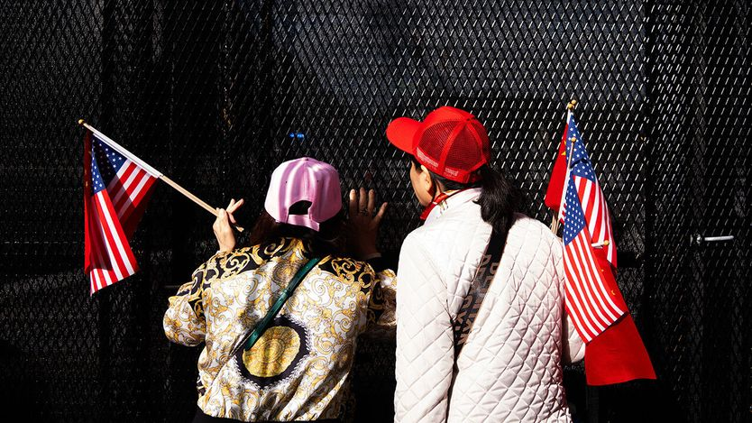

AI 危机来临时，中国会接电话吗？
In an AI crisis, would China answer the phone?
美国想要一条热线，而中国过去一直态度冷淡

- 2023 年美国战机击落中国侦察气球当天，五角大楼官员试图启用对华军事热线，时任防长奥斯汀想直接与其中国同行通话以防升级，但对方拒绝接听。2021 年时一位白宫前高级亚洲官员回忆，这条热线「只是在空房间里响了好几个小时」。
- 特朗普政府似乎认为 AI 热线会更管用。9 月 24 日习近平与特朗普在华盛顿会晤的少数成果之一，是同意为 AI 相关事件建立双边「沟通渠道」，并将在 11 月前举行第二轮 AI 对话。美方把这个想法比作冷战时期与苏联的热线。
- 但尝试过建立或使用对华热线的人往往不以为然。一名前美国驻华使馆副馆长说，这类热线「大多不管用」，危机中中国体系「通常会陷入沉默」。中国不愿接电话，是因为需要时间收集信息和拟定回应，也常常认为拖延能最大化对美国的筹码。
- 要让 AI 热线在危机中有效，它与现有热线需有几点不同：应以文字而非语音为基础（有人主张用传真），给对方时间审阅并准备回应，也便于应对突然的人事变动——这一点在近期军队高层清洗后尤显重要；此外还应就触发使用热线的门槛达成一致，并设立一条由 AI 专家值守、用于日常信息交流的独立渠道。
2023 年美国一架战斗机击落中国侦察气球当天，五角大楼官员试图启用一条对华军事热线。时任美国国防部长劳埃德·奥斯汀想直接与中国国防部长魏凤和通话，以防事态升级。只有一个问题：魏将军拒绝接听。一名中国军方发言人说，美国「没有为对话创造应有的氛围」。这也不是中国第一次回避这条热线。2021 年时任白宫最高级别亚洲事务官员的库尔特·坎贝尔回忆，它「只是在空房间里响了好几个小时」。
为人工智能紧急情况设立的热线会更有用吗？特朗普政府似乎认为会。9 月 24 日习近平与唐纳德·特朗普在华盛顿会晤，其少数成果之一是同意为 AI 相关事件建立双边「沟通渠道」。双方还同意在 11 月前举行一轮新近恢复的 AI 对话的第二次会议，届时习近平与特朗普计划在中国再次会面。双方都没有说明 AI 沟通渠道将如何运作。但美国官员（是他们提出这个想法的）把它比作冷战时期与苏联的热线。
在许多人看来，考虑到人们日益担心 AI 模型可能毁灭人类，这听起来很合理。然而在那些尝试过建立或使用对华热线的人当中，这个提议常引来翻白眼。「有过许多这类保持沟通渠道畅通的尝试，」曾任美国驻北京使馆副馆长、也曾在白宫和国务院担任高级亚洲事务官员的丹尼尔·克里滕布林克说。「那些热线大多不管用。」他补充说，危机中中国体系「通常会陷入沉默」。
冷战确实提供了一些有价值的教训。美苏领导人之间的热线，最初是在 1962 年古巴导弹危机几乎触发核战争之后设立的。最初的想法是让他们能快速、直接地沟通，而不是依靠可能要数小时才能传递的外交电报。尽管外交通讯很快提速，这条热线仍传递了紧迫感、积累了信任。它也并非总能缓和紧张：双方也用它发出威胁。但它与其他沟通机制一道，帮助避免了核末日。
美国试图与中国复制这一点，从一开始就麻烦不断。1998 年，为回应两年前的一场危机——当时中国向台湾附近海域发射导弹，促使美国向该地区派出两艘航母——设立了一条总统热线。1999 年美国误炸中国驻南斯拉夫首都贝尔格莱德使馆后，时任总统比尔·克林顿试图使用这条热线。但他的对等方江泽民一周都拒绝接听。两年后，一架美国侦察机与中国战斗机相撞、被迫降落在海南岛一个军用机场后，美国官员有 12 个小时联系不上中国政府中的任何人。
美国得出的一个结论是，它也需要一条通往中国军事指挥官的热线。这条热线于 2008 年启用，能在五角大楼美国国防部长办公室与北京领导层驻地中南海之间进行加密语音通话，并有一条分线通往中国国防部。然而通话必须提前 48 小时安排。而且很快人们就清楚，中国的危机管理方式没有改变。2009 年，中国海军和执法船只包围了南海一艘美国海洋监测船。美国通过热线打去的电话无人接听。
这类事件揭示出一种模式。中国似乎不愿接电话，因为它需要时间收集信息、拟定回应。但它也常常认为拖延有利，能最大化对美国的筹码——而美国通常希望尽快解决每一场危机。另一个障碍是，中国视自己为较弱一方，把美国建立「护栏」的尝试视为限制其活动的花招。（相比之下，苏联在军事上视自己与美国平起平坐，双方在避免核战争上有共同利益。）
经历过对华热线外交的老手并不都是怀疑论者。有人说，总统热线在较常规的事务谈判上（如领导人访问）以及协调应对 2007-09 年全球金融危机这类问题上帮过忙。2020 年美国总统选举前后，当中国担心美国可能计划攻击自己时，军事热线也发挥了作用。一些热线的支持者说，中国如今在 AI 安全上已有足够的自身担忧，因而有真实兴趣与美国交换信息，起初可聚焦于共同关切的问题，比如失控的 AI 模型和与政府无关的恶意个人。
不过，要让 AI 热线在危机中有效，它需要在几方面与现有热线不同。首先，它应当以文字而非语音连接为基础。「电话在危机的前端不管用，」新加坡学者、曾任五角大楼官员并协助谈判军事热线升级的德鲁·汤普森说。它管用的是「在后端，等中方有机会开完一次委员会会议之后」。他支持用传真。这给各方时间审阅内容、准备回应。它也免去了安排实时通话的麻烦，并降低了因语气传达而误译或误解的风险。
书面沟通也能应对突然的人事变动。一名中国政府顾问说，鉴于习近平近期对军队高层的清洗，这一点尤其切题。据卡内基国际和平基金会的 AI 政策研究者露西·罗说，另一项改进是就触发使用热线的门槛达成一致。她还建议设立一条独立沟通渠道，由具备 AI 专业知识的人值守，用于就小事件和最佳做法进行日常信息交流。
在近期的会议中，中西 AI 专家讨论过的一个潜在模式，是另一套 1998 年建立的常规军事沟通机制。根据《海上军事安全磋商机制协定》，中美军官每年会晤两次（中国暂停所有军事沟通时除外），讨论空中和海上安全事件，其中一些随后会在军事热线上处理。
中美是否已到了讨论这些细节的阶段，尚不清楚。双方尚未明确到底谁应参与他们恢复的 AI 对话——目前由美国财政部长斯科特·贝森特和中国一位副总理何立峰牵头。而且在两国领导人 11 月再次会面之前，他们还要忙于谈判其他事项，包括延长贸易战休战的更长期限。总的来说，宣布设立 AI 热线仍是积极的一步。现在他们需要让它真正管用。